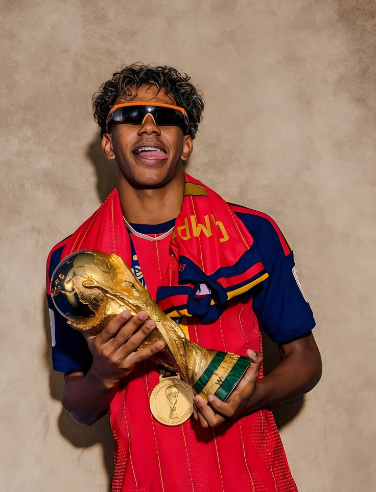
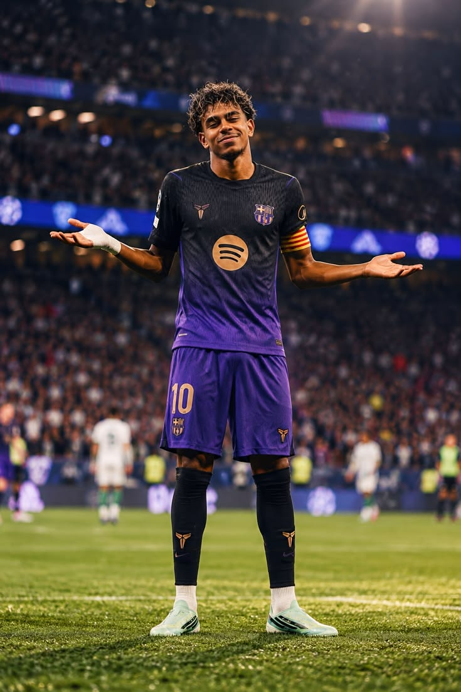
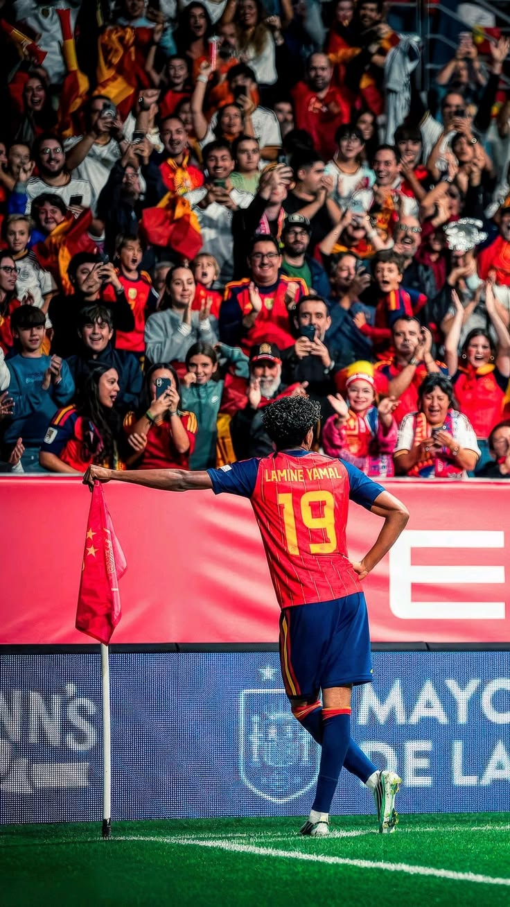
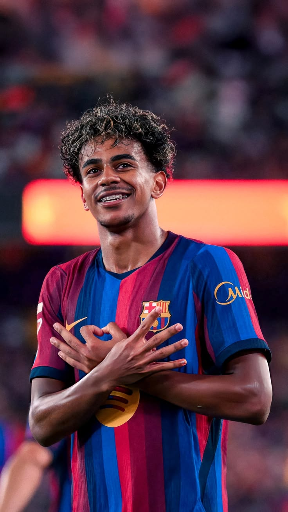
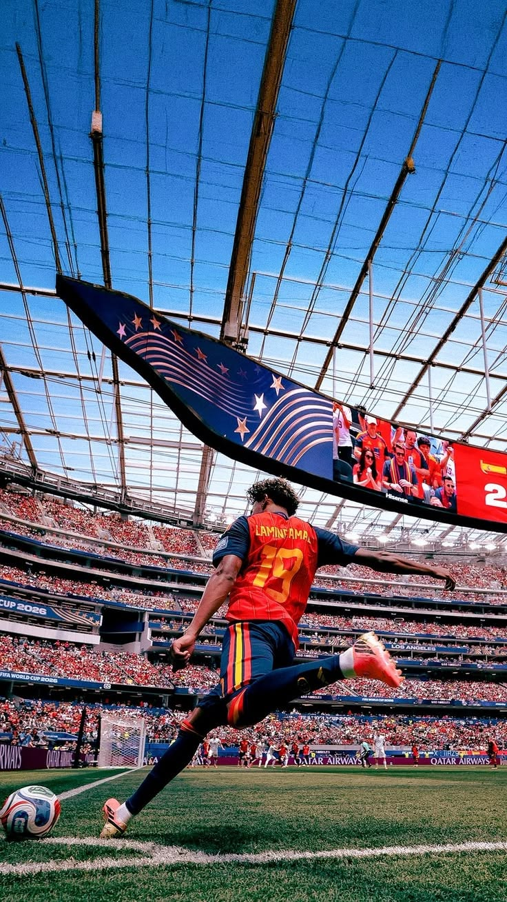

2014
Gia nhập La Masia
Yamal bước vào hệ thống đào tạo trẻ của Barcelona và bắt đầu hành trình tại một trong những học viện bóng đá nổi tiếng nhất thế giới.
Từ La Masia đến ánh đèn Camp Nou. Một thế hệ mới, một đôi chân trái đầy ma thuật và hành trình vẫn đang được viết tiếp trong sắc đỏ-xanh của Barça.

Một tài năng trưởng thành từ học viện trứ danh của Barcelona, nổi bật bởi kỹ thuật, khả năng rê bóng và sự tự tin khi đối đầu hậu vệ.

Lamine Yamal Nasraoui Ebana sinh ngày 13 tháng 7 năm 2007 tại Esplugues de Llobregat, Catalonia. Anh gia nhập hệ thống đào tạo trẻ của FC Barcelona khi còn nhỏ và nhanh chóng gây chú ý nhờ kỹ thuật cá nhân, nhãn quan chuyền bóng cùng khả năng xử lý trong không gian hẹp.
Tháng 4/2023, Yamal có trận ra mắt đội một Barcelona khi mới 15 tuổi. Từ đó, anh dần trở thành một lựa chọn quan trọng ở hành lang phải, mang đến tốc độ, sự sáng tạo và những khoảnh khắc bùng nổ.
Những dấu mốc đã định hình hành trình của Lamine Yamal ở Barcelona và đội tuyển Tây Ban Nha.
Yamal bước vào hệ thống đào tạo trẻ của Barcelona và bắt đầu hành trình tại một trong những học viện bóng đá nổi tiếng nhất thế giới.
Ngày 29/04/2023, Yamal ra sân trong trận gặp Real Betis tại LaLiga, trở thành cầu thủ trẻ nhất ra mắt đội một Barça ở giải đấu trong lịch sử CLB thời điểm đó.
Tháng 9/2023, anh có trận ra mắt đội tuyển quốc gia và ghi bàn trong chiến thắng trước Georgia.
Yamal góp công trong hành trình vô địch EURO 2024 của Tây Ban Nha, đồng thời giành giải Cầu thủ trẻ xuất sắc nhất giải đấu.
Yamal được vinh danh với Kopa Trophy 2024, giải thưởng dành cho cầu thủ trẻ xuất sắc nhất.
Barcelona trao cho Yamal chiếc áo số 10 — số áo gắn với nhiều biểu tượng lớn trong lịch sử CLB.
Điều khiến Yamal đặc biệt không chỉ là tốc độ, mà còn là sự bình tĩnh và khả năng tạo khác biệt trong những tình huống một đối một.
Khả năng rê bóng, đổi hướng và tạo cơ hội từ hành lang phải.

Những màn trình diễn nổi bật trong màu áo đội tuyển Tây Ban Nha.
Một vài nét phác họa về phong cách thi đấu và hành trình bóng đá của Yamal.
Chạm liên tục vào nút trong 10 giây. Bạn có thể đạt 50 lần chạm không? Kỷ lục được lưu ngay trên thiết bị.
Trả lời 5 câu hỏi về Lamine Yamal, La Masia và hành trình cùng Barcelona. Thử xem bạn là fan cứng đến mức nào.
Chạm vào từng bức ảnh để xem lớn.


Một hành trình còn rất dài phía trước. Cùng dõi theo từng bước chạy, từng pha bóng và những chương tiếp theo của Lamine Yamal.
Khám phá FC Barcelona ↗